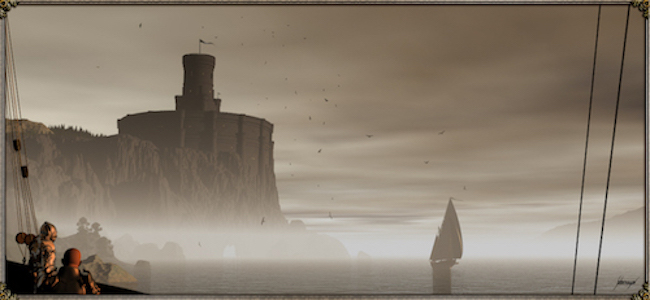

Overview:
House Baratheon of Storm's End is a legally extinct Great House of Westeros. A cadet branch was formerly the royal house, but House Lannister now controls the throne. House Baratheon traditionally ruled the Stormlands on the eastern coast of Westeros, aptly named for its frequent storms, from their seat of Storm's End.
House Baratheon became the royal house of the Seven Kingdoms after Robert Baratheon led a rebellion against the Targaryen dynasty. At the end of the rebellion, Robert ascended the Iron Throne as Robert I and married Cersei Lannister after the death of Lyanna Stark.
House Baratheon's sigil is a black stag on a gold background and their house words are "Ours Is the Fury." When Robert ascended to the Iron Throne, a gold crown was added to the stag, denoting their status as the royal house.
House Baratheon is now legally extinct, but the family bloodline lives on through Gendry, a bastard son of Robert Baratheon and the last known living person with true blood ties to the Baratheon family.